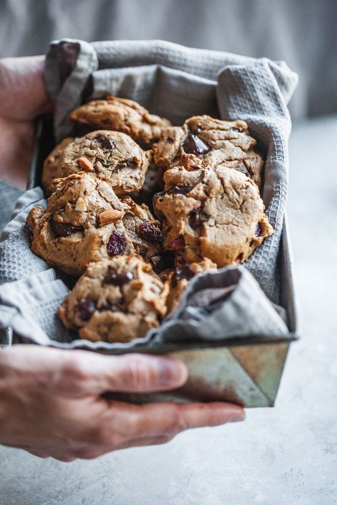

<div class="home-body">
    <div class="home-div">
        <div class="home-text-presentation"> 
            <span>Tom’s Cookie est une boutique de cookies artisanale, qui délivre son expertise à Pau, depuis 1965. </span>
            <span>Créée par Tom Soulage, cette entreprise est une histoire de famille puisqu’aujourd’hui, c’est son petit-fils Nicolas, qui a repris la boutique.
            </span>
            <span>Le savoir-faire de Tom’s Cookie est reconnu dans toute la région. 
            </span>
            <span>Les produits locaux utilisés donnent un goût unique à nos cookies faits avec amour et délicatesse. Ici le cookie est bien plus qu’un simple biscuit, c’est une œuvre d’art cuisinée par des experts, à l’air frais des montagnes.
            </span>
            <span>Qu’attendez-vous pour venir déguster nos cookies, tout en se baladant sur le boulevard des Pyrénées ? 
            </span>
        </div>
        <div>
             
        </div>
    </div>

</div>
